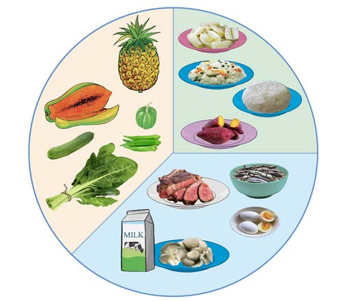

Activity 4
Use the library or reliable online sources to search for information about a balanced diet for manual workers.
Plan balanced diet for breakfast, lunch, and dinner for a manual worker.
Sick people
A balanced diet is important for a sick person because it helps the body fight diseases. This diet also helps the sick person to gain strength and important nutrients. Sick people should eat more foods that build and protect the body. These foods help repair damaged parts, like cells and tissues, due to illness. They also make the muscles, bones and immune system strong. However, the food needs may differ depending on the type of illness. Therefore, sick people should eat a balanced diet as advised by health professionals. Figure 10 shows/describes a balanced diet for a sick person.
